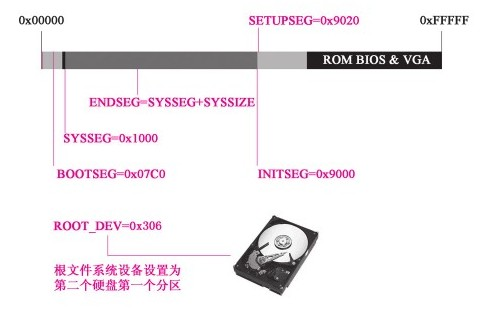

Table of Contents
1 linux加载到main的过程
从开机到main函数执行分为三步,目的是从启动盘加载操作系统程序,完成main函数所需的准备工作.
- 启动bios,准备实模式下中断向量表和中断服务程序
- 从启动盘加载操作系统程序到内存
- 为执行32的main函数做过渡工作
1.0.1 启动BIOS,准备实模式下的中断向量表和中断服务程序
- BIOS启动原理
x86分 16位实模式 和 32位保护模式 ,为了兼容最开始的启动问题,所有x86的cpu加电就进入16位实模式(寻址范围0x00000到0xFFFFF),且CPU硬件逻辑设计为加电瞬间强行将CS(代码段寄存器的地址)值设置为0XF000,IP(偏移地址)值为0xFFF0,这样CS:IP就指向0xFFFF0(CS<<4+IP),这个地址是BIOS程序的范围.
以8K的BIOS为例子,在系统总线所占的地址段为0xFE000~0xFFFFF.
- BIOS在内存中加载中断向量表和中断服务程序
BIOS程序在内存最开始的位置（0x00000）用1 KB的内存空间（0x00000～0x003FF）构建中断向量表，在紧挨着它的位置用256字节的内存空间构建BIOS数据区（0x00400～0x004FF），并在大约57 KB以后的位置（0x0E05B）加载了8 KB左右的与中断向量表相应的若干中断服务程序。图1-2中精确地标注了这些位置。 中断向量表中有256个中断向量，每个中断向量占4字节，其中两个字节是CS的值，两个字节是IP的值。每个中断向量都指向一个具体的中断服务程序。
1.0.2 加载操作系统内核程序并为保护模式做准备
对于Linux 0.11操作系统而言，计算机将分三批逐次加载操作系统的内核代码。第一批由BIOS中断int 0x19把第一扇区bootsect的内容加载到内存；第二批、第三批在bootsect的指挥下，分别把其后的4个扇区和随后的240个扇区的内容加载至内存。
- 加载第一部分内核代码–引导程序
计算机硬件体系结构的设计与BIOS联手操作，会让CPU接收到一个int 0x19中断。CPU接收到这个中断后，会立即在中断向量表中找到int 0x19中断向量值: 0x0E6F2。根据这个值可以在中断服务程序找到准确位置 按照这个简单、“生硬”的规则，int 0x19中断向量所指向的中断服务程序，即启动加载服务程序，将软驱0盘面的0磁道1扇区的内容复制至内存0x07C00处 这个扇区里的内容就是Linux 0.11的引导程序，也就是我们将要讲解的bootsect，其作用就是陆续把软盘中的操作系统程序载入内存。这样制作的第一扇区就称为启动扇区（boot sector）第一扇区中的程序由bootsect.s中的汇编程序汇编而成.
中断向量表（Interrupt Vector Table）：实模式中断机制的重要组成部分，记录所有中断号对应的中断服务程序的内存地址。 中断服务（Interrupt Service）程序：通过中断向量表的索引对中断进行响应服务，是一些具有特定功能的程序。
- 加载第二部分内核代码–setup
- bootsect对内存的规划
BIOS已经把bootsect也就是引导程序载入内存了，现在它的作用就是把第二批和第三批程序陆续加载到内存中。为了把第二批和第三批程序加载到内存中的适当位置，bootsect首先做的工作就是规划内存
//代码路径：boot/bootsect.s ... .equ SYSSIZE, 0x3000 .equ SETUPLEN, 4 ; nr of setup-sectors,需要加载的扇区数 .equ BOOTSEG, 0x07c0 ; original address of boot-sector,启动扇区被BIOS加载到的位置 .equ INITSEG, 0x9000 ; we move boot here - out of the way,BOOTSEG将要移动到的新位置 .equ SETUPSEG, 0x9020 ; setup starts here,setup被加载到位置 .equ SYSSEG, 0x1000 ; system loaded at 0x10000 (65536),内核被加载的位置 .equ ENDSEG, SYSSEG + SYSSIZE ; where to stop loading,内核末尾位置 .equ ROOT_DEV, 0x306 ;根文件系统设备号 ...

- bootsect对内存的规划